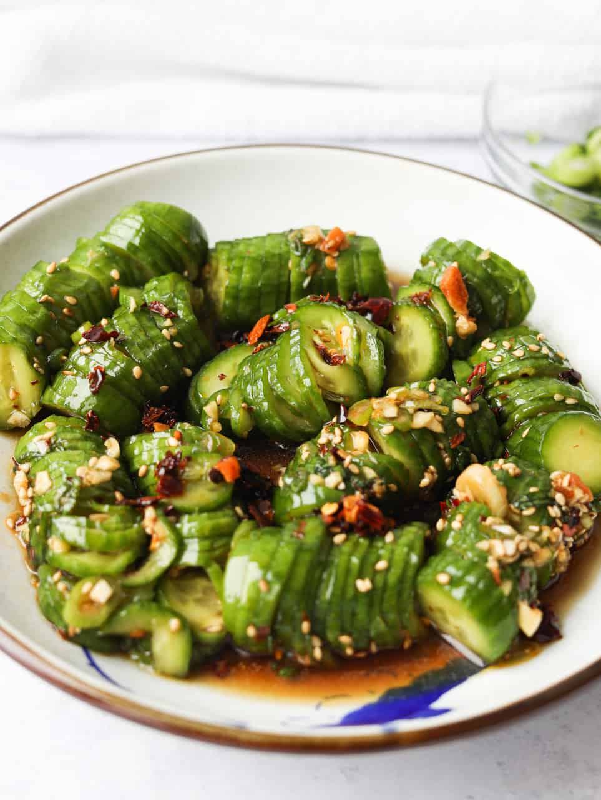

Cucumber Salad

Description
This is a simple recipe for a spicy cucumber salad.It's quick and easy to make, and can be customised really easily. My favourite variation includes gochugaru, which can be replaced and substituted however you see appropriate. As it's spicy, it's a great option to pair with rice to balance out the heat.
The ingredients consist of cucumber, salt to draw out moisture, and the dressing ingredients. The cucumbers only need about 10 minutes to sit in the salt, which will prevent unwanted moisture to be drawn out while the salad sits. This ensures the final product is both crunchy, and doesn't water down the dressing.
Ingredients
- 1 large Cucumber, or many smaller ones
- Salt
Dressing
- 1 tbsp soy sauce
- 2 cloves garlic, minced
- 1 tbsp rice vinegar
- 1 tbsp sugar
- 0.5 tsp red chili powder
- 0.25 tsp sesame seeds
Directions
- Slice cucumbers. Either slice them regularly, or place them inbetween two chopsticks and slice most of the way through diagonally. Then, flip the cucumber over to the unsliced side and slice perpindicular, again making sure not to slice all the way through.
- Coat the cucumbers in salt, and leave them in a bowl for around 10 minutes to draw out all the excess moisture. Rinse with cold water 4-5 times to completely remove the salt, and strain them.
- Combine the dressing ingredients in a small bowl, taste and adjust as necessary.
- Pour the dressing over the cucumbers, and gently mix them.
- Serve either on their own, with rice, or as a side dish.
Back